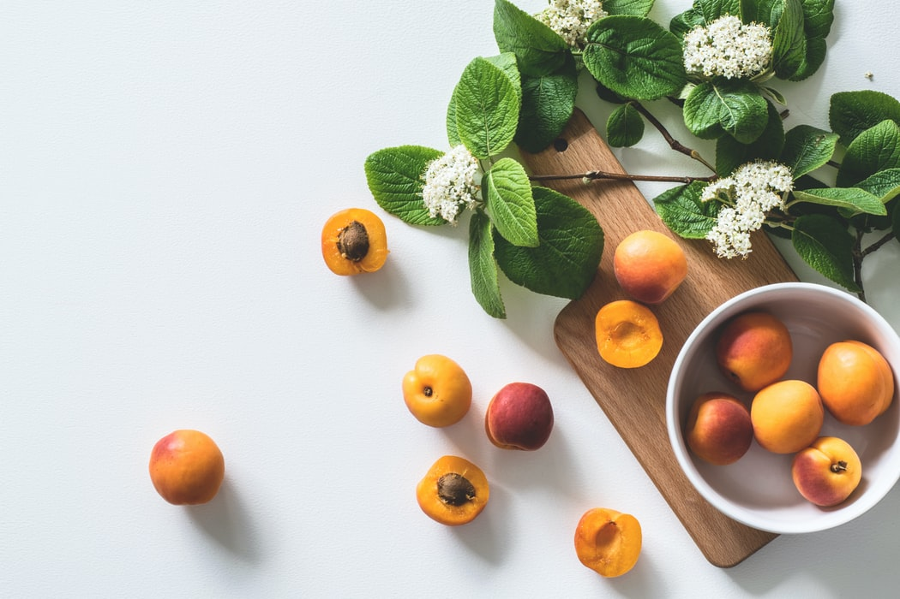

 Nectarines, like peaches, originated in China over 2,000 years ago and were cultivated in ancient Persia, Greece and Rome. They were grown in Great Britain in the late 16th or early 17th centuries and introduced to America by the Spanish. Contrary to popular belief, they are not a cross between a Peach and a Plum. Nectarines are very closely related to peaches and in fact, only differ by the gene that creates the "fuzz" on the outside of a peach. By allowing firm nectarines to sit at room temperature until soft to the touch, they will become increasingly juicy and sweet. Besides cobblers, pies and tarts, the texture of nectarines also makes them ideal for sautéing and grilling. Try them on the BBQ with your favorite sauce for a mouth watering surprise. LoFood organic nectarines, are grown naturally fresh and juicy without the use of synthetic fertilisers, pesticides, or herbicides. Our farmers use traditional earth-friendly farming methods inspected by a nationally recognised agency to verify organic authenticity. Organic nectarines are preferred for reasons of taste, health and the environment. LoFood organic nectarines are hand-selected for excellent quality. Store at room temperature for up to one week after ripening. Most stone fruit may be refrigerated to stop the ripening process. Organic fruits should not be stacked with non-organic fruits.At Gally’s Farms, we defend a link with the nature. Our point of view is simple: the nature does well, we need to do the rest. We cultivate our products and invent our services which permitted to the city and its inhabitants to preserve a precious link with the benefits of a natural environment. We have a stock farming, a dairy, and a fruit and vegetable pick-your-own. Everything we produce is organic without the use of pesticides of any kind.
Order Now!
| Name | Description | Price | Quantity (Kg) |
|---|---|---|---|
| Nectarines | From Gally's Farms. | 4€/kg | |